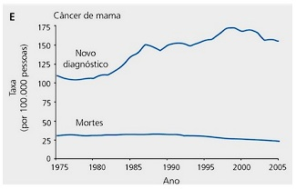

Questão 1 · Diagnóstico · 4000163582Eduardo tem três anos e é levado à consulta, por sua mãe, por apresentar febre alta há 10 dias. Ao exame físico, apresenta edema palpebral bilateral, petéquias no palato, exsudato amigdaliano, adenomegalia cervical anterior e posterior, fígado palpável a 3,5cm do RCD e baço a 2,5cm do RCE. O exame laboratorial indicado para confirmação do diagnóstico é:
A Aspirado de medula óssea.
B Sorologia para vírus da dengue.
C Sorologia para vírus de Epstein-Barr.
D Bacterioscopia e cultura da secreção faríngea.
E Teste rápido para pesquisa de estreptococo do grupo A.
Questão 2 · Febre sem sinais localizatórios FSSL · 4000163581Lactente de 40 dias é levado ao pronto-socorro com história de febre de 39ºC há 36 horas e recusa alimentar. Encontra-se em regular estado geral, hiperemia timpânica à direita, frequência cardíaca em torno 120bpm e ausculta pulmonar normal. A melhor conduta é:
A Internar, investigar e iniciar antibioticoterapia.
B Colher urocultura e iniciar cefalexina oral.
C Liberar e orientar para retornar em 24 horas.
D Liberar e tratar otite média aguda com amoxicilina.
E Colher hemocultura e aplicar ceftriaxona IM ambulatorialmente.
Questão 3 · Diagnóstico dif erencial das anemias microcíticas · Talassemias · 4000163580Pré-escolar, sexo masculino, 4 anos, com história de anemia não responsiva ao sulfato ferroso na dose de 5mg/kg/dia, administrado durante seis meses, meia hora antes das refeições com suco de frutas cítricas. Antecedentes pessoais sem intercorrências. A mãe teve anemia na infância e fez vários tratamentos. História nutricional: leite materno exclusivo até o sexto mês de vida. Atualmente come arroz, feijão, frutas, carne (quatro vezes por semana) e leite integral (três vezes ao dia). Exame físico: paciente pálido, sem outras alterações. Hemograma: Hm: 6.000.000/mm³; Hb: 10,2g/dL; Ht: 30%; VCM: 50fL; HCM: 16pg; CHCM: 22%; RDW: 12%; morfologia da série vermelha: hipocromia e microcitose; leucometria: 7.600/mm³(eos: 2%, basó los: 0%, bastões: 2%, seg: 36%, linf: 58%, mon: 2%) e plaquetas: 300.000/mm³; reticulócitos: 1,5%. Para confirmar a hipótese diagnóstica mais provável, o exame a ser solicitado é:
A Ferritina.
B Mielograma.
C Eletroforese de hemoglobina.
D Curva de fragilidade osmótica.
E Índice de saturação da transferrina.
Questão 4 · Psiquiatria Inf antil · Diagnóstico do TDAH · Transtorno do Déf icit de Atenção e Hiperatividade TDAH · 4000163579Escolar, sexo masculino, 10 anos, vem à consulta com o pediatra por di culdades de relacionamento social na família e na escola. Mostra um desempenho escolar errático com alguns bons resultados mesclados com resultados ruins. A família recebe bilhetes da escola, quase diariamente, com queixas de que o paciente atrapalha o andamento da aula com piadas, conversas ou discussões. Segundo a mãe, o lho é bastante inteligente, mas vem deteriorando o seu desempenho ao longo dos anos com piora acentuada nas últimas séries do ensino fundamental. Não consegue se concentrar nos trabalhos e termina as tarefas muito rápido, com uma qualidade baixa. Frequentemente, perde o material necessário para fazer as lições de casa. De acordo com a família, isso sempre aconteceu, mas nos últimos anos os sintomas têm cado mais significativos. Com base nessa história, o diagnóstico mais provável é:
A Distimia.
B Distúrbio de conduta.
C Transtorno de humor bipolar
D Transtorno opositor- desafiador.
E Transtorno do déficit de atenção e hiperatividade
Revisar: possível letra faltando em enunciado
Questão 5 · Pediatria · Avaliando o desenvolvimento · 4000163578Lactente, sexo masculino, 11 meses, é trazido à consulta e, segundo a mãe, não está fazendo as mesmas coisas que as outras crianças da sua idade. Ainda não caminha, balbucia, mas não diz nenhuma palavra, além de “mama” e “papa”. Apresenta uma boa interação social com a mãe, se interessa pelos brinquedos que são colocados ao seu alcance e campo visual. Senta com apoio, engatinha pouco e, por poucos segundos, consegue car em pé, apoiado. História pregressa: nasceu pré-termo de 35 semanas de gestação, pesando 2.230g. Não apresentou intercorrências no período perinatal e iniciou o aleitamento materno nas primeiras 24h de vida. A orientação adequada, nesse caso, é:
A Encaminhar para avaliação neurológica com investigação de imagem e eletroencefalograma.
B Investigar audição, encaminhar ao neurologista e iniciar tratamento fonoaudiológico imediato.
C Iniciar intervenção com fisioterapia e terapia ocupacional, duas vezes na semana, e fazer revisão em um mês.
D Investigar audição e transtorno do espectro autista, iniciar tratamento fonoaudiológico e terapia ocupacional.
E Considerar defasagem normal dentro dos padrões esperados se corrigida a idade gestacional e reavaliar em um mês.
Questão 6 · Sindrome Turner · Pediatria · 4000163577Recém-nascido a termo, do sexo feminino, nascido de parto vaginal, apresentou linfedema no dorso dos pés e das mãos e ausência de pulsos nos membros inferiores. Realizado ecocardiograma compatível com coarctação da aorta. Não foram identi cadas outras anomalias e nem desproporções corporais. Dados antropométricos: peso: 2.900g, comprimento: 44cm e PC: 33cm. O diagnóstico mais provável é:
A Síndrome de Down.
B Síndrome de Patau.
C Síndrome de Turner.
D Síndrome de Noonan.
E Síndrome de Prader-Willi.
Questão 7 · Trauma Abdominal Penetrante · Cirurgia · 4000163576Adolescente de 16 anos sofreu um ferimento penetrante por arma branca na região central do abdômen. Exame físico: confusão mental, FC: 152bpm, FR: 28irpm, PA: 80X50 mmHg, abdômen “em tábua”, não permitindo a palpação. As vias aéreas foram estabilizadas, estabelecido aporte de oxigênio e realizada expansão volêmica. A tomogra a computadorizada evidenciou líquido na cavidade abdominal. A conduta imediata é:
A Laparotomia exploradora.
B Endoscopia digestiva alta.
C Punção venosa central para monitorar a PVC.
D Punção do líquido abdominal com agulha grossa.
E Antibioticoterapia intravenosa de amplo espectro.
Questão 8 · Pediatria · Situações em que há restrições ao aleitamento materno · 4000163575Janaína, primigesta, procura o posto de saúde porque está apresentando, ao amamentar, “dor no bico do peito” desde a segunda semana pós-parto. No exame da mama, o pediatra identi ca ssura mamilar. A conduta mais importante neste caso é:
A Amamentar na mesma posição.
B Avaliar a mamada e corrigir a técnica de amamentar.
C Passar o próprio leite nos mamilos após as mamadas e secar ao ar livre.
D Usar, na aréola e nos mamilos, produtos (cremes ou pomadas) cicatrizantes.
E Manter os mamilos secos, trocando com frequência os forros absorventes usados.
Revisar: possível letra faltando em enunciado
Questão 9 · Pediatria · Situações em que há restrições ao aleitamento materno · 4000163574Letícia teve seu primeiro lho há 5 dias; um recém-nascido do sexo masculino, a termo, com peso e comprimento dentro da normalidade. A mesma apresentou lesões vesiculares na comissura labial hoje, sem outras queixas até o momento. A conduta recomendada quanto ao aleitamento materno é:
A Prescrever leite humano pasteurizado de banco de leite e isolar o recém-nascido de sua mãe até a fase de crostas.
B Orientar leite materno ordenhado, isolar o neonato de sua mãe até a fase de crostas e administrar aciclovir ao recém-nascido.
C Contraindicar o aleitamento materno temporariamente, oferecer fórmula láctea e isolar o recém-nascido de sua mãe até a fase de crostas.
D Manter o aleitamento materno ao seio, com lavagem de mãos, uso de máscara e proteção das lesões do contato direto com o recém-nascido.
E Manter o aleitamento materno ao seio, com lavagem de mãos, uso de máscara e proteção das lesões do contato direto com o recém-nascido e administrar VZIG ao mesmo.
Questão 10 · Quadro clínico · Diagnóstico dif erencial · Diagnóstico · 4000163573Maria Clara, 15 anos, teve sua menarca há 3 anos. Desde então, vem apresentando irregularidade menstrual, com ciclos com espaço de até seis meses. Ao exame físico, presença de acne e hirsutismo facial, M5P4, altura de 153 cm (z -1/-2) e IMC: 29,90 kg/m² (z +2/ +3). Baseado no relato acima, deverão ser solicitados:
A TC de crânio, dosar LH/FSH.
B TC de crânio, dosar TSH e T4 livre.
C US pélvica, dosar DHEA e testosterona.
D TC de suprarrenal, dosar TSH e T4 livre.
E US pélvica, dosar gonadotrofina coriônica humana.
Questão 11 · Ferramentas de abordagem f amiliar · 4000163572Mário tem 78 anos e reside sozinho. Ele tem hipertensão arterial e diabetes. Além disso, já sofreu queda com fratura do punho direito. Em uma visita domiciliar, você percebe que Mário está sujo e emagrecido, e também que as condições de higiene da casa são precárias. Ele informa que não tem se alimentado bem, pois tem di culdade de fazer a comida por causa do punho. Mário tem prescrição de enalapril, atenolol, anlodipino, AAS, omeprazol e insulina. Desde a queda há 2 meses, não faz aplicação de insulina. Para elaborar um plano terapêutico para Mário, considerando a rede de apoio, uma ferramenta importante que deve ser utilizada é:
A O genograma.
B O APGAR familiar.
C O ECOMAPA.
D O FIRO.
E O PRACTICE.
Questão 12 · Epidemiologia · 4000163571A figura abaixo mostra a evolução dos diagnósticos de câncer de mama em comparação com a taxa de mortalidade pela doença. O fenômeno representado na figura pode representar um padrão sugestivo de:

A Sobrediagnóstico.
B Aumento de prevalência.
C Déficit de prevenção.
D Subnotificação.
E Diagnóstico precoce.
Questão 13 · Medicina Preventiva · Erros Sistemáticos ViésVieses · 4000163570No ano 2000, dois pacientes entraram em um grupo em que se estava estudando sobre câncer de próstata. Um paciente A de 55 anos foi rastreado para câncer de próstata anualmente e foi diagnosticado com a doença em 2005, sendo submetido ao tratamento. Esse paciente A faleceu em 2015 quando tinha 70 anos. Um paciente B da mesma idade (55 anos) não foi rastreado. Em 2010 o paciente B foi diagnosticado com câncer de próstata e foi submetido ao tratamento. O paciente B faleceu em 2015 com 70 anos. Esses fatos ocorridos com os pacientes A e B em relação ao rastreamento de câncer de próstata representa um viés de:
A Seleção.
B Tempo de duração.
C Tempo ganho.
D Adesão.
E Confusão.
Questão 14 · Medicina Preventiva · 4000163569Um estudo randomizado feito com 24.400 pacientes, 12.000 deles caram no grupo que usou o medicamento X e 12.400 estavam no grupo controle. O número de mortes no grupo que usou o medicamento X foi de 3.000 pessoas. No grupo controle, o número de mortes por essa mesma causa foi de 4.960. O intervalo de confiança desse estudo foi de 95%. O Número Necessário para Tratar será de:
A 75
B 6,66
C 40
D 15
E 25
Questão 15 · Medicina Preventiva · 4000163568Um estudo randomizado feito com 24.400 pacientes, 12.000 deles caram no grupo que usou o medicamento X e 12.400 estavam no grupo controle. O número de mortes no grupo que usou o medicamento X foi de 3.000 pessoas. No grupo controle, o número de mortes por essa mesma causa foi de 4.960. O intervalo de confiança desse estudo foi de 95%. A redução de risco absoluto que esse medicamento pode proporcionar será de:
A 75%
B 6,66%
C 40%
D 15%
E 25%
Questão 16 · Política Nacional de Atenção Básica PNAB · 4000163567A última Política Nacional de Atenção Básica, instituída pela portaria Nº 2.436, de 21 de setembro de 2017, define a possibilidade da existência de dois tipos de equipe: Equipe de Saúde da Família (eSF) e Equipe de Atenção Básica (eAB). Há uma diferença nas composições dos dois formatos de equipe, que é:
A A eAB não tem Agente Comunitário de Saúde.
B A eSF não tem técnico de enfermagem.
C A eSF não tem Agente Comunitário de Saúde.
D A eAB não tem técnico de enfermagem.
E A eAB tem apenas enfermeiro e técnico de enfermagem.
Questão 17 · Princípios e Diretrizes do SUS na Lei n 80801990 · 4000163566O Decreto N° 7.508, de 28 de junho de 2011, que regulamenta a Lei N° 8.080, de 19 de setembro de 1990, define Região de Saúde como espaço geográ co contínuo constituído por agrupamentos de Municípios limítrofes, delimitado a partir de identidades culturais, econômicas e sociais e de redes de comunicação e infraestrutura de transportes compartilhados, com a nalidade de integrar a organização, o planejamento e a execução de ações e serviços de saúde. Para se instituir uma Região de Saúde, segundo o referido Decreto, são necessários ações e serviços de: I - atenção primária II - urgência e emergência III - atenção psicossocial IV - atenção ambulatorial especializada e hospitalar V - vigilância em saúde Estão corretas as alternativas:
A I e II.
B II e III.
C I, III e IV.
D II, IV e V.
E I, II, III, IV e V.
Revisar: possível letra faltando em enunciado
Questão 18 · Medicina Preventiva · Método SOAP · 4000163565O ReSOAP, Registro de Saúde Orientado por Problemas, é bastante utilizado na Atenção Primária em Saúde em todo o mundo. O formato de registro no prontuário se dá através do SOAP. Observe o “A” feito em uma consulta em uma unidade de saúde: 1. Hérnia de disco? 2. Cefaleia 3. Hipertensão arterial 4. Diabetes tipo II 5. Dor no ombro a esclarecer Lembrando-se da orientação do que não deve ser registrado como “problema” ou “condição”, é possível dizer que esse “A” está:
A Incorreto, porque não se pode colocar sintomas isolados na lista de problemas ("cefaleia").
B Correto, porque, quando não souber o diagnóstico, coloca-se interrogado ou a esclarecer (“hérnia de disco?”; “dor no ombro a esclarecer”).
C Correto, porque deve-se colocar os diagnósticos definidos (“hipertensão arterial”; “diabetes tipo II”), sintomas ("cefaleia") e problemas indefinidos com interrogação ou a esclarecer (“hérnia de disco?”; “dor no ombro a esclarecer”).
D Incorreto, porque não se colocam problemas interrogados ou a esclarecer (“hérnia de disco?”; “dor no ombro a esclarecer”).
E Correto, porque pode ser feito como a(o) profissional achar mais adequado.
Questão 19 · Relação MédicoPaciente · Método Clínico Centrado na Pessoa · Medicina de Família e Comunidade · 4000163564Leia atentamente parte do diálogo de uma consulta em uma unidade de saúde e responda. Médicx – Em que posso te ajudar? Pessoa – Estou com uma dor aqui na coluna incomodando já faz uma semana. É muito ruim! Médicx – Explique melhor, por favor. Pessoa – Não sei bem como começou. Mas é bem aqui (mostra com a mão a região lombar) e desce para essa parte da perna (mostra com mão o trajeto na parte lateral anterior da coxa direita). Dói mais quando co muito tempo de pé e quando tento me abaixar. Médicx – Pessoa – Muito mal! Já tomei até ibuprofeno, mas não passou! Médicx – Pessoa – Acho que pode ser uma hérnia de disco! Minha tia tem hérnia e disse que a dor é parecida com a minha. Médicx – E como isso tem afetado a sua vida? Pessoa – Tem incomodado muito! Não estou conseguindo trabalhar direito e está ruim até para dormir. Médicx – Entendo! Pessoa – Penso que deva tomar um remédio mais forte e fazer um exame da coluna, para ter certeza que é hérnia. Médicx – Entendo! Bom, antes de partirmos para analisar mais detalhes sobre essa dor e sobre suas impressões, gostaria de saber se há algo mais que te motivou a se consultar hoje. Pessoa – Não! Foi só essa dor mesmo. Se não fosse isso, nem teria vindo no posto. Quando a(o) pro ssional comenta – “Bom, antes de partirmos para analisar mais detalhes sobre essa dor e sobre suas impressões, gostaria de saber se há algo mais que te motivou a se consultar hoje.” – Pode-se considerar que foi utilizada uma estratégia de habilidade de comunicação/entrevista clínica chamada de:
A Identificação da demanda oculta.
B Prevenção de demandas aditivas.
C Entrevista motivacional.
D Transferência e contratransferência.
E Demora permitida.
Revisar: possível letra faltando em enunciado
Questão 20 · Método Clínico Centrado na Pessoa · 4000163563Leia atentamente parte do diálogo de uma consulta em uma unidade de saúde e responda. Médicx – Em que posso te ajudar? Pessoa – Estou com uma dor aqui na coluna incomodando já faz uma semana. É muito ruim! Médicx – Explique melhor, por favor. Pessoa – Não sei bem como começou. Mas é bem aqui (mostra com a mão a região lombar) e desce para essa parte da perna (mostra com mão o trajeto na parte lateral anterior da coxa direita). Dói mais quando co muito tempo de pé e quando tento me abaixar. Médicx – Pessoa – Muito mal! Já tomei até ibuprofeno, mas não passou! Médicx – Pessoa – Acho que pode ser uma hérnia de disco! Minha tia tem hérnia e disse que a dor é parecida com a minha. Médicx – Pessoa – Tem incomodado muito! Não estou conseguindo trabalhar direito e está ruim até para dormir. Médicx – Entendo! Pessoa – Penso que deva tomar um remédio mais forte e fazer um exame da coluna, para ter certeza que é hérnia. Médicx – Entendo! Bom, antes de partirmos para analisar mais detalhes sobre essa dor e sobre suas impressões, gostaria de saber se há algo mais que te motivou a se consultar hoje. Pessoa – Não! Foi só essa dor mesmo. Se não fosse isso, nem teria vindo no posto. A partir da análise do diálogo entre Médicx e Pessoa, é possível dizer que as perguntas assinaladas em negrito e sublinhadas indicam o uso do:
A Primeiro componente do Método Clínico Centrado na Pessoa, entendendo a pessoa como um todo.
B Segundo componente do Método Clínico Centrado na Pessoa, explorando a experiência da doença.
C Primeiro componente do Método Clínico Centrado na Pessoa, explorando a Saúde, a doença e a experiência da doença.
D Segundo componente do Método Clínico Centrado na Pessoa, elaborando um Plano Conjunto de Manejo dos Problemas.
E Terceiro componente do Método Clínico Centrado na Pessoa, intensificando a relação entre a Pessoa e o Médico.
Revisar: possível letra faltando em enunciado
Questão 21 · Métodos de indução do parto · Obstetrícia · 4000163562Paciente internada para indução do parto. Obstetra faz avaliação e revela que o índice de Bishop é 8. Qual é o método de indução que deve ser escolhido?
A Ocitocina.
B Ácido hialurônico.
C Laminárias.
D Misoprostol.
E Sonda Foley.
Questão 22 · Obstetrícia · Assistência ao parto normal · 4000163561Paciente G1P0, gestação de termo, sem morbidades, encontra-se em período expulsivo há 40 minutos. As contrações uterinas duram em torno de 50 segundos com frequência de 5 em 10 minutos. Ausculta cardíaca fetal basal de 140 bpm e sem desacelerações periódicas. A apresentação é cefálica etida com a sutura sagital no diâmetro anteroposterior com crânio no assoalho pélvico e couro cabeludo visível no introito vaginal. Qual é a melhor conduta a ser adotada?
A Orientação e apoio.
B Ocitocina.
C Episiotomia.
D Vácuo extrator ou fórceps de alívio.
E Cesárea.
Questão 23 · Parto cesárea · 4000163560Qual das alternativas abaixo representa uma indicação fetal de cesariana?
A Placentação anormal.
B Desproporção cefalopélvica.
C Deiscência da incisão uterina.
D Deformidades pélvicas congênitas.
E Anomalia congênita.
Questão 24 · Períodos da gestação · Obstetrícia · Prénatal · 4000163559Puérpera, 30 anos, teve parto cesáreo de trigêmeos há 3 dias. Em sua história obstétrica, consta um episódio de aborto e um parto normal. Qual seria a representação gráfica da paridade desta paciente?
A G5 P1 C3 A1
B G5 P1 C1 A1
C G3 P1 C1 A1
D G3 P1 C3 A1
E G5 P4 A1
Questão 25 · Diagnóstico clínico · Obstetrícia · Prénatal · 4000163558Gestante chega ao pronto atendimento com queixa de dor pélvica, não sabe informar a data de sua última menstruação (DUM) e informa presença de movimentos fetais; ao exame físico, apresenta colostro e o fundo uterino localiza-se entre a cicatriz umbilical e a borda superior da sínfise púbica; logo, essa paciente tem uma idade gestacional de, no mínimo:
A 12 semanas.
B 16 semanas.
C 20 semanas.
D 24 semanas.
E 28 semanas.
Questão 26 · Lesões diversas da mama · 4000163557“(...) é caracterizada por proliferação anárquica de dúctulos compostos somente por células epiteliais, em meio a tecido adiposo e estroma mamário, sem reação estromal. Esses dúctulos têm contornos arredondados, não apresentam células mioepiteliais, embora exista camada basal, e as células que os revestem são cuboidais, pequenas, sem atipias significativas. A luz apresenta secreção eosinofílica densa. A forma atípica da lesão apresenta atipias citológicas e/ou arquiteturais. No estudo imunoistoquímico, as células epiteliais são negativas para receptores de estrogênio e progesterona, não expressam HER2 e são positivas para proteína S100. (...)" A descrição histológica acima diz respeito à:
A Hiperplasia ductal atípica.
B Atipia epitelial plana.
C Adenose microglandular.
D Esferulose colagênica.
E Hiperplasia sem atipias.
Questão 27 · Urologia · Cirurgia · 4000163556Quais as bras nervosas que parecem implicar na siopatologia da bexiga hiperativa relacionadas a traumas e a algumas afecções medulares?
A Fibras aferentes tipo A.
B Fibras aferentes tipo B.
C Fibras aferentes tipo C.
D Fibras aferentes tipo Alfa.
E Fibras aferentes tipo Beta.
Questão 28 · DDS45X46XY Disgenesia gonadal mista · Ginecologia · Disgenesia gonadal pura · 4000163555Qual das síndromes abaixo possui as seguintes características: I- Autossômica Recessiva; II- Geralmente: estrutura normal, sem anomalias somáticas; III- Pode associar-se com: hipoacuasia (Sd. de Perrault), manifestações neurológicas (ataxia, epilepsia e nistagmo, retardo mental); IV- Genitais internos femininos e hipoplásticos pela falta de estímulo hormonal;
A Disgenesia gonadal pura 46XY.
B Disgenesia gonadal pura 46XX.
C Síndrome de Turner.
D Disgenesia gonadal mista 46XY.
E Disgenesia gonadal mista 46XX.
Questão 29 · Ginecologia · Embriologia do trato genital f eminino · 4000163554“Dois pares de ductos genitais se desenvolvem em ambos os sexos, a saber: os mesonéfricos (ductos de Wol ) e os paramesonéfricos (ductos de Müller). Os ductos paramesonéfricos, que se desenvolvem no feto feminino enquanto os mesonéfricos regridem, são originados do epitélio celômico e, laterais aos ductos de Wol , crescem caudalmente a eles e depois os cruzam ventralmente para se fundirem na linha média. Fundidos, formam o canal _______________ e progridem até a face posterior do seio urogenital, onde se inserem no Tubérculo de Müller.”
A Ureterovaginal.
B De Nuck.
C De Wolf.
D Uterovaginal.
E De Douglas
Questão 30 · Urologia · Cirurgia · 4000163553“(...) o trajeto do ureter na pelve e sua relação com o ligamento largo do útero: após cruzar os vasos ilíacos, o ureter segue inferiormente junto à parede lateral da pelve. Ao atingir o assoalho pélvico, segue trajeto transversal lateromedialmente; penetra na base do ligamento largo, cruza a artéria uterina posteriormente, próximo (5 cm) da parte supravaginal do colo. Situa-se entre a/o ________________, aproxima-se da parte ___________________ e curva-se ____________ até atingir a bexiga.” Assinale a alternativa que completa adequadamente os espaços do enunciado acima:
A Plexo venoso supravaginal; lateral do fórnice da vagina; medialmente.
B Ligamento cardinal; lateral do fórnice da vagina; medialmente.
C Plexo arterial supravaginal; anterior do fórnice da vagina; posteriormente.
D Artéria hipogástrica; posterior do fórnice da vagina; anteriormente.
E Ligamento cardinal; medial do fórnice da vagina; posteriormente.
Questão 31 · Apendicite Aguda · Cirurgia · 4000163552Apendicite Aguda é uma das principais causas de dor abdominal, sendo a causa mais frequente de cirurgia de urgência em todo o mundo. Sobre essa patologia, marque a alternativa errada:
A O sinal propedêutico de lenander, usado na avaliação de uma apendicite, é a dissociação entre a temperatura retal e axilar > 1°C.
B Migração da dor, anorexia, náuseas, defesa na FID, dor à descompressão brusca na FID, febre > 37,2°C, leucocitose e desvio para a esquerda são pontos avaliados na escala de alvorado modificada.
C 7-10 pontos na Escala de Alvorado tem indicação de tratamento cirúrgico.
D São fases da apendicite: edematosa, fibrinosa, flegmonosa e perfurativa.
E A abordagem videolaparoscópica é contraindicada para os casos com peritonite não localizada.
Questão 32 · Pneumotórax Hipertensivo · Cirurgia · 4000163551Mulher de 22 anos sofreu um acidente automobilístico e, em segundos, apresentava turgência jugular direita, ausculta diminuída à direita e percussão torácica esquerda com hipertimpanismo. A primeira abordagem recomendada é:
A Realização de uma toracocentese esquerda, seguida da drenagem em selo d’água (no 5º espaço intercostal na linha axilar média).
B Operação imediata, pois o quadro clínico clássico inclui tamponamento cardíaco com abafamento de bulhas.
C Entubamento, pois a causa é decorrente de uma maciça entrada de ar na cavidade pleural, que desvia o mediastino e grandes vasos torácicos.
D Antes de adotar qualquer medida terapêutica, é prudente a realização de uma radiografia de tórax para confirmar o diagnóstico de pneumotórax hipertensivo.
E Análise do nível de comprometimento ventilatório com o uso imediato da cricotireoidostomia cirúrgica.
Questão 33 · Suporte Nutricional Perioperatório · Cirurgia · 4000163550Sobre a terapia nutricional em cirurgia, marque a alternativa errada:
A O jejum pré-operatório a partir da meia-noite é desnecessário na maioria dos pacientes.
B Os pacientes submetidos à cirurgia, considerados sem risco específico de aspiração, devem beber líquidos claros até 2 horas antes da anestesia. Os sólidos devem ser permitidos até 6 horas antes da anestesia.
C Na maioria dos casos, a ingestão nutricional oral deve ser continuada após a cirurgia, sem interrupção, imediatamente após a cirurgia.
D Em pacientes com baixa ingestão oral e que não conseguem manter acima de 50% da ingestão recomendada por mais de sete dias, recomenda-se iniciar terapia de suporte nutricional.
E Pacientes com risco nutricional grave devem receber terapia nutricional antes da cirurgia de grande porte, mesmo que as operações, incluindo aquelas para câncer, devam ser adiadas. Um período de 3 (três) dias pode ser apropriado.
Questão 34 · Tratamento Clínico · Tratamento Cirúrgico · 4000163549Na pancreatite aguda, necessitamos estrati car a gravidade para que possamos definir a melhor conduta para cada caso. Assim, assinale a alternativa correta:
A Na pancreatite aguda grave, a cirurgia está indicada em todos os casos de necrose pancreática.
B A única conduta nutricional preconizada na pancreatite aguda grave é a nutrição parenteral em virtude da promoção de repouso intestinal.
C Pacientes com pancreatite aguda leve de causa biliar, após melhora, não necessitarão remover a vesícula.
D A nutrição enteral por sonda nasoentérica, mesmo com posicionamento distal após o ângulo de Treitz, estimula a secreção exógena do pâncreas, agravando o quadro na pancreatite aguda.
E Pacientes com pancreatite aguda grave, apresentando necrose infectada, após 2-3 semanas de evolução e falha nos antibióticos, deverão submeter-se a uma drenagem da coleção ou necrose infectada, inicialmente, se possível, por métodos percutâneos ou endoscópicos.
Questão 35 · Cirurgia · Coledocolitíase · 4000163548Icterícia obstrutiva acontece quando há algum obstáculo ao livre uxo de bile entre o sítio produtor e o duodeno. São causadas por drogas, doenças imunológicas, afecções congênitas, parasitas, cálculos ou tumores. Sobre esse tema, marque a alternativa errada:
A Icterícia obstrutiva pode estar associada com a tríade de charcot.
B Pacientes com icterícia obstrutiva apresentam icterícia, colúria e acolia fecal.
C Na colestase puramente intra-hepática, observamos dilatação importante da via biliar na ultrassonografia.
D A colangio RNM é usada para o diagnóstico da icterícia obstrutiva, com bons resultados e com morbidade muito baixa.
E A CPRE é um exame utilizado para a definição diagnóstica da icterícia obstrutiva, porém melhor indicada quando necessitamos de algum procedimento nas vias biliares, pelos riscos envolvidos com o procedimento (10% de morbidade).
Questão 36 · Tratamento · Cirurgia · 4000163547Paciente de 34 anos, masculino, chega ao pronto socorro com queixa de dor lombar esquerda de intensidade 10/10 iniciada há 8 horas que vem apresentando piora progressiva, e irradiou-se para região escrotal e face interna da coxas ipslaterais. Apresentou dois episódios de vômitos e hematúria macroscópica. Nega febre. A dor permanece apesar do uso de analgesia opioide. Ao exame, apresenta temperatura 36,5°C, PA. 120x80 mmHg, pulso 80bpm, fr 15irpm, abdômen plano, ácido, indolor, Giordano negativo. Realizou exames laboratoriais: hemograma normal, creatinina 0,8 mg/dL, PCR 31 mg/L, sumário de urina com incontáveis hemácias. Realizou tomogra a computadorizada de abdômen que mostrou cálculo ureteral à esquerda medindo 0,4cm, causando moderada Uretero hidronefrose amontante. Diante deste quadro, qual a melhor conduta:
A Passagem de cateter duplo J à esquerda, em caráter de urgência.
B Ureterorrenolitotripsia rígida a laser.
C Incialmente, terapia medicamentosa expulsiva.
D Internação e antibioticoterapia de amplo espectro.
E Nenhuma das anteriores.
Questão 37 · Trombose Venosa Prof unda TVP · Cirurgia · 4000163546Sobre as tromboses venosas profundas, pode-se afirmar que:
A O sinal de Homans positivo sempre está presente.
B Acomete, na maioria das vezes, os membros bilateralmente.
C Durante o tratamento, os pacientes devem manter-se em repouso absoluto.
D Só acontecem em viagens de longas distâncias de avião.
E É mais comum acontecerem em pacientes com neoplasia em uso de quimioterápico do que em pacientes que não estão realizando quimioterapia.
Questão 38 · Cirurgia · Colecistite Aguda · 4000163545L.T.R. sexo feminino, 39 anos. Queixa Principal: dor abdominal. HDA: paciente chega à emergência do HULW referindo dor abdominal, de início abrupto após o almoço. Informa que a dor se intensi cou após comer um hambúrguer no lanche da tarde. Relata náuseas e febre de 38°C, medida no trabalho momentos antes de ir para a emergência. Nega alergias, cirurgias prévias e constipação. Estado geral regular, com fácies de dor aguda, anictérica, acianótica e LOTE FC: 98 bpm PA: 120 x 82 mmHg Temp: 38,3ºC FR: 13 ipm. Abdômen: dor à palpação do hipocôndrio direito e sinal de Murphy positivo. Exames: Hb: 13g%. Leucócitos totais: 11.000/ mm3 Bastões: 6%. Plaquetas: 350.000. ALT: 55 U/L AST: 50 U/L. BT: 1,0 mg/dL. Bilirrubina Direta: 0,2 mg/ dL. FAL: 145 U/L. Amilase: 140 UI. Lipase: 1,3 UI USG: espessamento da parede da vesícula biliar em 6mm, apresenta imagens esféricas, hiperecogênicas, som sombra acústica posterior, sugestivo de litíase. Sinal de Murphy ultrassonográ co positivo. Sobre o caso clínico, marque a alternativa errada:
A A principal hipótese é de colecistite aguda.
B A melhor conduta seria uma Colecistectomia videolaparoscópica com colangiografia intra-operatória no prazo ideal de até 72 horas após o início da sintomatologia.
C Paciente sem indicação precisa de uma colangiorressonância NM.
D Paciente com uma colecistite Tokyo 3 com indicativo de colecistostomia.
E Caso o paciente apresentasse um risco cirúrgico alto, o tratamento conservador deve ser a primeira opção, para posteriormente programar colecistectomia como tratamento definitivo.
Revisar: possível letra faltando em enunciado
Questão 39 · Hérnias da Parede Abdominal · Cirurgia · 4000163544Qual dos triângulos abaixo, estudados no tratamento das hérnias inguinais, apresenta como limites: borda medial-lateral do reto abdominal; vasos epigástricos laterais inferiores e ligamento inguinal (trato iliopúbico) inferiormente?
A Triângulo “desastre” ou “desgraça” (ou vasos ilíacos).
B Triângulo de “dor” (ou dos nervos).
C Triângulo das hérnias indiretas.
D Triângulo de Hesselbach ou hérnias diretas.
E Triângulo das hérnias femorais.
Questão 40 · Trombose Venosa Prof unda TVP · Cirurgia · 4000163543Sobre os cuidados no pré-operatório, cuja nalidade é diminuir o risco de complicações de um paciente cirúrgico, em especial na avaliação dos riscos de TVP/TEP, marque a alternativa errada:
A No paciente com baixo risco, deveremos fazer profilaxia com movimentação ativa dos MMII, deambulação precoce, uso de meias elásticas até a coxa e uso de compressão pneumática se acamado.
B São contraindicações absolutas de profilaxia do TVP: hipersensibilidade (trombocitopenia induzida pela heparina) e sangramento ativo.
C Para os pacientes em uso de Varfarina (anticoagulante oral), esta deve ser suspensa na véspera da cirurgia.
D Em pacientes com uso de enoxaparina, esta deve ser suspensa 12 horas antes da cirurgia; se em uso de HNF em bomba de infusão contínua, a suspensão pode ocorrer 2 horas antes da cirurgia.
E Pacientes com alto risco poderão fazer profilaxia com medidas não farmacológicas e enoxaparina 40mg SC 1 x dia.
Questão 41 · Inf ectologia · Diagnóstico · 4000163542Em relação à tuberculose, é correto afirmar:
A A demonstração de bacilos álcool-ácidos resistentes no esfregaço de escarro nem sempre estabelece o diagnóstico de
B As hemoculturas positivas para
C O surgimento de
D A terapia com corticosteroides demonstra ser útil para prevenir a pericardite constrictiva da pericardite tuberculosa, mas não tem utilidade para reduzir complicações neurológicas da meningite tuberculosa.
E A taxa de recaída da tuberculose está em torno de 20% mesmo com a completa adesão ao tratamento.
Questão 42 · Agentes etiológicos · Pneumologia · 4000163541Em relação às pneumonias, é correto afirmar:
A Os microrganismos anaeróbios são uma causa significativa, quando um episódio de aspiração ocorreu dias a semanas antes da apresentação da pneumonia.
B A pneumonia adquirida na comunidade (PAC) ocorre fora do hospital ou dentro de 72 horas da admissão hospitalar em um paciente não residente em um estabelecimento de cuidados de longa permanência.
C Demência, AVC ou rebaixamento do nível de consciência são fatores epidemiologicamente possíveis para a PAC por agentes aeróbios ou bactérias gram-positivas entéricas.
D A presença de confusão mental indica, obrigatoriamente, uma pneumonia grave, independentemente da idade do indivíduo acometido.
E A amostra de escarro para GRAM com mais de 10 neutrófilos e menos de 25 células epiteliais escamosas, em um campo de pequeno aumento no microscópio, é representativa para o diagnóstico etiológico da pneumonia.
Questão 43 · Psicof armacologia · Cuidados paliativos · 4000163540Em relação aos CUIDADOS PALIATIVOS, é correto afirmar:
A A morfina é a principal droga para o tratamento da dor forte; além de ser efetiva para o controle da dispneia.
B O midazolam não deve ser usado em pacientes dispneicos ansiosos, porque promove rebaixamento do sistema nervoso central e piora da dispneia.
C Não há embasamento teórico para o uso do metilfenidato ou modafenila para o tratamento de fadiga no paciente oncológico.
D Os neurolépticos haloperidol ou risperidona devem ser drogas de escolha para o tratamento do delirium hiperativo.
E Como a constipação não é uma regra para os pacientes que estão recebendo opioides, não há necessidade da prescrição concomitante de laxantes (ex.: bisacodil e senna).
Questão 44 · Lúpus Eritematoso Sistêmico LES · 4000163539Em relação ao Lúpus Eritematoso Sistêmico (LES), é correto afirmar:
A O diagnóstico de LES pode ser feito com razoável probabilidade, se pelo menos 5 dos 11 critérios de Classificação do Lúpus Eritematoso Sistêmico estiverem presentes.
B É comum estabelecer o diagnóstico de LES preenchendo 5 critérios da tabela de Classificação do LES, mesmo com o FAN (fator antinúcleo) negativo.
C As taxas de sobrevivência de dez anos estão em torno de 50%. Em um percentual pequeno dos pacientes, a doença segue um curso recidivante e remitente.
D Situações de gravidade no LES como glomerulonefrite, anemia hemolítica, miocardite, hemorragia alveolar, envolvimento do sistema nervoso central e trombocitopenia grave requerem tratamento com corticosteroides em altas doses por longos períodos (Ex.: meses).
E Nos últimos anos, a aterosclerose acelerada associada à inflamação crônica tornou-se uma das principais causas de morte.
Questão 45 · Doença Pulmonar Obstrutiva Crônica DPOC · Pneumologia · 4000163538Em relação à Doença Pulmonar Obstrutiva Crônica, é correto afirmar:
A Na doença avançada, a hipertensão pulmonar pode ser sugerida por alargamento das veias pulmonares vistas na radiografia do tórax ou tomografia computadorizada do tórax e a ecocardiografia Doppler fornece uma estimativa da pressão da artéria pulmonar.
B Os pacientes que requerem um tratamento mais intenso são: VEF1menor que 70% (GOLD III / IV), mais de uma exacerbação no ano anterior e três hospitalizações por exacerbação do DPOC no ano anterior.
C O oxigênio suplementar para pacientes com hipoxemia em repouso (Pao2 < 56 mmHg) melhora a qualidade de vida do doente, mas não tem evidências de melhoria na história natural de DPOC.
D Os broncodilatadores alteram o declínio da função pulmonar no DPOC, melhoram os sintomas, a tolerância ao exercício, o VEF1 e o estado geral de saúde.
E A dispneia no final da vida pode ser extremamente desconfortável e angustiante para o paciente e a família. Nesses casos, está sempre indicada a intubação orotraqueal.
Questão 46 · Gota · 4000163537Em relação à GOTA, é correto afirmar:
A Independentemente do tempo de evolução, é uma doença que acomete uma única articulação, a exemplo da podagra.
B O diagnóstico é estabelecido através da identificação de cristais de urato no fluido articular ou tofos.
C Mais de 90% dos casos de gota primária acomete mulheres, usualmente acima de 30 anos de idade.
D Os níveis absolutos bem elevados do urato sérico são mais desencadeadores de crises de gota do que as flutuações séricas do ácido úrico.
E Na crise de gota, a analgesia deve ser realizada com antiinflamatórios não esteroidais, incluindo o ácido acetilsalicílico.
Questão 47 · Def inição e Etiologias · Indicação de Hemotransf usão · Abordagem Inicial · 4000163536Em relação à hemorragia digestiva alta, é correto afirmar:
A O hematócrito é um excelente indicador precoce da magnitude da perda sanguínea.
B A melena se desenvolve após a perda de 10-30 mL de sangue no trato gastrointestinal superior, enquanto hematoquezia requer uma perda de pelo menos 100 ml.
C Em ordem decrescente de importância, as principais causas de hemorragia digestiva alta são Síndrome de Mallory Weiss, Anormalidades Vasculares, Hipertensão Portal, Doença Ulcerosa Hepática e Gastrite Erosiva.
D A etapa inicial de abordagem é a avaliação do estado hemodinâmico. Uma pressão arterial sistólica inferior a 100 mmHg identifica um paciente de alto risco com sangramento agudo grave. Uma frequência cardíaca de mais de 100 batimentos / min com pressão arterial sistólica acima 100 mmHg significa perda de sangue aguda e moderada.
E Concentrado de hemácias deve ser administrado para manter a hemoglobina em 10g/dl, com base na hemodinâmica do paciente, status, comorbidades (especialmente doenças cardiovasculares) e presença de sangramento contínuo.
Questão 48 · Nef rologia · Hipernatremia · 4000163535Em relação aos distúrbios hidroeletrolíticos, é correto afirmar:
A Na hiponatremia, geralmente, existe um déficit do sódio corporal total e, por isso, deve ser tratada com solução salina hipertônica a 3%.
B A Hipernatremia é rara em pacientes conscientes que têm acesso livre à água por causa da extrema sensibilidade do mecanismo de sede.
C A correção da hipocalemia deve ser feita sempre com cloreto de potássio (KCl), independentemente da presença de acidose.
D A diminuição da excreção renal de potássio (K +), gerando uma hipercalemia, pode ocorrer devido a um aumento dos níveis de mineralocorticoides como no hiperaldosteronismo
E A inalação de Beta-2 agonistas (Ex.: fenoterol) é um dos tratamentos da hipercalemia, reduzindo o potássio corporal total.
Questão 49 · Clínica Médica · Hepatologia · Outras Hepatopatias · 4000163534Em relação à ascite, é correto afirmar:
A A ascite refratária ocorre em até 10% dos pacientes com cirrose e é definida como a persistência de ascite tensa, apesar da terapia diurética máxima (espironolactona, 400 mg/dia, e furosemida, 160 mg/dia), ou o desenvolvimento de azotemia ou distúrbios eletrolíticos em doses submáximas de diuréticos.
B Um GASA reduzido e um baixo nível de proteína (menor que 2,5 g/dl) são vistos na maioria casos de congestão hepática secundária à doença cardíaca ou à síndrome de Budd-Chiari.
C Um gradiente de albumina soro-ascite maior que 1,1 é mais comumente encontrado em uma carcinomatose peritoneal.
D Nos pacientes com ascite decorrente de hipertensão portal, apenas 50% respondem à terapia dupla de espironolactona + furosemida.
E Quando o paciente tem ascite e o sódio sérico menor que 125 mEq/l, a conduta será suplementar sódio com solução salina a 3%.
Questão 50 · Análise do líquido pleural · Pneumologia · 4000163533Em relação ao derrame pleural, é correto afirmar: Respostas: 1 12 23 34 45
A Um exsudato deve conter (1) uma proporção de proteína no líquido pleural em relação à proteína sérica maior que 0,5; (2) uma proporção de desidrogenase láctica (DHL) no líquido pleural em relação à DHL sérica maior que 0,6; ou (3) um nível de DHL no fluido pleural maior que dois terços do limite superior da normalidade. Quando todos os três critérios são atendidos, a sensibilidade, especificidade e o valor preditivo positivo excedem 98% para definir um derrame pleural exsudativo
B Um nível de colesterol superior a 45 mg/dl é consistente com derrame pleural transudativo.
C No derrame pleural parapneumônicoexsudativo, está sempre indicada a drenagem do tórax do paciente.
D Um derrame pleural parapneumônico com pH menor que 7,2 e glicose pleural menor que 60 mg/dl indica que é um derrame não complicado e, portanto, não precisa de drenagem torácica.
E Empiema tuberculoso ou efusão pleural tuberculosa são denominações da mesma situação fisiopatológica, na qual a tuberculose atinge o espaço pleural por disseminação hematogênica ou pelo sistema linfático.